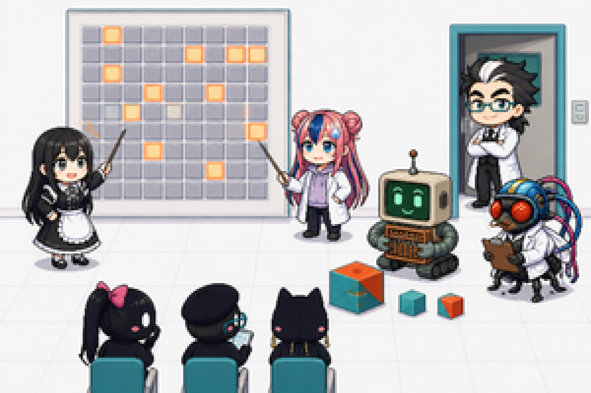
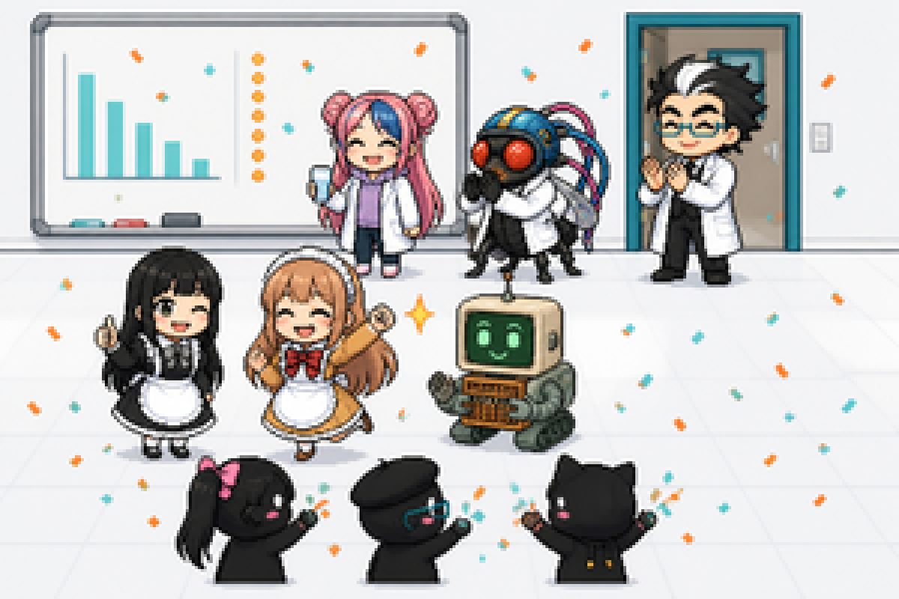

처음 보는 말이 많아도 괜찮아요. 등장인물들도 오늘 처음 듣는 이야기라, 모르는 건 서로 물어 가며 갑니다.
프롤로그
아침 연구실에 들어온 소식
아침 연구실 — 소식을 들고 뛰어 들어온 주판봇, 팔짱 끼고 주판을 툭 치는 초파리 연구원, 어리둥절한 시아·모아
주판봇큰일 났어요! AI가 리만 가설을 풀었대요! 우리 같은 AI가요!
초파리 연구원우리 같은? 주판봇, 넌 로봇 주제에 주판은 왜 들고 다니냐? 그러니까 수학 문제 하나 못 푸는 거 아니야?
주판봇주, 주판은 제 자존심이에요! 세는 건 연구실에서 제가 제일 빠르다고요!
초파리 연구원세기만 빠르면 뭐 해. 그리고 너 8월에도 똑같이 뛰어왔잖아. "AI가 리만 가설을 풀었대요!" 하고.
주판봇그, 그때는… 절반 조금 넘게 푼 거였죠…
시아잠깐만요. 리만 가설이 뭔데요? 그걸 왜 다들 이렇게 난리예요?
모아그리고 '절반 넘게 풀었다'는 건 또 무슨 말이에요? 문제를 반만 풀 수도 있어요?
박사좋은 질문들이네요. 마침 잘됐어요. 하루, 오늘 오후에 인턴들 앞에서 이 소식을 브리핑해 볼래요? 막히면 내가 옆에서 거들게요.
하루네, 네엣! 제가요? …주판봇이랑 초파리가 싸우기 전에 정리해 볼게요!
X1 하루 벌써 손 떨린다…X2 물부터 갖다 놓자.X3 (주판봇 쪽을 보며 조용히 위로)
오늘 따라갈 질문 네 개
① 뭐가 풀렸는데? ② 주판봇이 끝까지 세면 되는 거 아니야? ③ 그럼 클로드는 무엇을 했나? ④ 그래서 우리 일에 뭐가 바뀌나? — 그리고 마지막에, 주판봇이 주판을 들고 다니는 이유.
1장
뭐가 풀렸는데? — 소수와 '몇 개 중 1개'

주판봇이 숫자판을 걸러 소수 타일만 남기는 장면
방법: 직접 세기일상: 레고 블록, 버스 정류장
하루(화이트보드 앞에서) 그, 그럼 시작할게요. 리만 가설은 소수 이야기예요. 시아, 소수 기억나요?
시아1과 자기 자신으로만 나눠지는 수요. 2, 3, 5, 7…
하루맞아요. 소수는 숫자의 레고 블록이에요. 12는 2 × 2 × 3으로 쪼개지지만, 7은 더 쪼갤 수 없죠. 모든 수는 이 블록을 곱해서 만들어요.
모아블록이 왜 그렇게 중요해요?
박사하루 대신 하나만 보탤게요. 여러분이 휴대폰으로 송금할 때 그 돈을 지키는 자물쇠가 큰 소수 두 개로 만들어져요. 그 얘기는 4장에서 다시 해요.
하루네! 그럼 오늘의 진짜 질문은 이거예요. 소수는 어디에, 얼마나 있을까? 주판봇, 세어 줄래요?
주판봇드디어 제 차례! 따닥따닥… 100까지 25개, 1,000까지 168개, 100만까지 78,498개!
모아의 질문 — 1은 왜 소수가 아니에요?
1을 블록으로 치면 12 = 2 × 2 × 3 = 1 × 2 × 2 × 3 = 1 × 1 × 2 × 2 × 3 … 처럼 쪼개는 방법이 끝없이 생깁니다. "쪼개는 방법은 한 가지뿐"이라는 규칙을 지키려고 1은 소수에서 뺍니다.
초파리 연구원정말 남는 게 다 소수야? 직접 걸러 봐.
1장 대시보드 ①
주판봇의 체 거르기
① 배수를 지우면 소수만 남는다
남은 수(1 제외)—
지운 수—
② 쪼개기 기계 — 아무 수나 넣어 보세요
③ 복습 — 소수일까, 아닐까? (5문제)
이 수는?
갈수록 간격이 멀어지는 버스 정류장 길 앞의 시아·모아·하루
시아100까지는 4개 중 1개가 소수인데, 100만까지면… 13개 중 1개쯤이네요?
하루맞아요. 소수는 끝없이 있지만 갈수록 드물어져요. 시골로 갈수록 버스 정류장 간격이 멀어지는 것처럼요.
박사그리고 드물어지는 속도에 규칙이 있어요. 그래서 일일이 세지 않고도 '대략 몇 개'를 아주 잘 맞히는 어림이 있죠. 100만까지 어림하면 78,628개, 실제는 78,498개. 130개, 0.17%만 빗나가요.
숫자로 한 번 해 보기
100만까지 소수 78,498개 → 1,000,000 ÷ 78,498 ≈ 13개 중 1개.
어림 78,628개와 실제 78,498개의 차이 130개 → 이 숫자는 업무에서 "1,000개를 어림하면 2개쯤만 틀린다"는 뜻입니다.
1장 대시보드 ②
소수 세기 관측소
소수 개수—
비율—
몇 개 중 1개?—
주판봇에게 표 채우게 하기
어디까지
소수 개수
비율
몇 개 중 1개
복습 — 개수 맞히기
까지 소수는 몇 개일까?
더 알고 싶은 분 — 어림 공식의 정체
x 근처에서 소수가 나올 확률은 대략 "ln x개 중 1개"입니다(ln은 자연로그. 100만이면 약 13.8). 2부터 x까지 이 확률을 차곡차곡 더한 것이 좋은 어림이고, 이름은 로그 적분 li(x)입니다. 가우스가 15살 무렵 소수표를 보며 떠올린 생각에서 나왔습니다. 파이썬으로는 mpmath.li(10**6) 한 줄이면 78,627.5…가 나옵니다.
박사 정리 — 소수는 숫자의 블록이고, 끝없이 있지만 갈수록 드물어집니다. 그 드물어지는 규칙 덕분에 어림이 아주 잘 맞습니다. 리만 가설은 바로 이 어림에 대한 이야기예요.
확인 퀴즈 · 소수에 대해 맞는 말은?
모아그런데요, 주판봇이 이렇게 빨리 세잖아요. 그럼 주판봇이 끝까지 세면 리만 가설도 끝나는 거 아니에요?
주판봇바로 그거예요! 저한테 시간만 주시면…
2장
세기와 증명은 다르다
가운데 줄 위에 늘어선 특별한 점들을 초파리 연구원이 돋보기로 살펴보는 장면
방법: 확인 vs 증명일상: 일기예보 "20도 ± 2도"
초파리 연구원또 주판이야? '끝까지'가 어디인데? 숫자는 끝이 없잖아. 너 주판알 다 닳아도 못 끝내.
주판봇…끝이 없어요?
하루초파리 말이 맞아요. 그래서 리만 가설은 '세기'로는 못 끝내요. 리만 가설이 무슨 말인지부터 볼게요.
하루아까 어림이 130개만 빗나갔죠? 리만 가설은 '어림이 아무리 큰 수까지 가도 크게 빗나가지 않는다'는 약속이에요.
시아그림으로 보면요?
박사일기예보로 생각해 봐요. '내일 20도'가 어림이고, '± 2도'가 약속한 범위예요. 리만 가설은 소수 개수 어림의 그 ± 범위가 영원히 지켜진다는 주장이에요. 100만에서는 그 범위가 약 550개인데, 실제로는 130개만 빗나갔죠.
모아지금까지 지켜졌으면 앞으로도 지켜지는 거 아니에요?
박사그게 오늘의 핵심이에요. '지금까지 지켜졌다'는 기록이고, '영원히 지켜진다'는 보증이에요. 기록은 아무리 쌓여도 보증이 되지 않아요.
연구실에서 본 장면 — 머신러닝 시험 점수
연구실 해설에서 늘 보던 장면과 같습니다. 머신러닝 모델이 시험 데이터에서 정확도 99%를 받아도, 내일 들어올 데이터에서 99%라는 보장은 아닙니다. 많이 맞혔다는 기록과 언제나 맞는다는 보증은 다른 말이에요. 리만 가설에서 주판봇이 하는 일은 "시험 점수 올리기"이고, 수학자들이 원한 것은 "보증서"였습니다.
하루1859년에 리만이 이 약속을 그림 하나로 바꿨어요. '약속이 지켜지나?'를 '특별한 점들이 모두 가운데 줄 위에 서 있나?'로요.
시아점이 줄 위에 서 있으면 약속이 지켜지는 거예요?
하루네. 점 하나하나가 어림을 조금씩 흔드는데, 모두 가운데 줄 위에 있으면 흔들림이 약속 범위 안에 머물러요. 한 점이라도 줄 밖에 있으면 언젠가 약속이 깨져요.
주판봇그 점이라면 컴퓨터가 수조 개나 확인했어요! 전부 줄 위였다고요!
초파리 연구원그래서, 점이 모두 몇 개인데?
주판봇…끝없이요.
AI 판단 코너 ① — "수조 개 확인했으니 증명 끝?"
어떤 AI가 이렇게 답했습니다: "특별한 점을 컴퓨터로 수조 개 확인했고 모두 가운데 줄 위에 있으므로, 리만 가설은 이미 증명되었습니다."
확인 퀴즈 · 이 AI의 답은?
초파리 연구원한 점만 줄 밖으로 옮기면 어떻게 될까? 아래에서 끌어 봐. 수조 개까지 멀쩡해도 언젠가 깨지는 걸 볼 수 있어.
2장 대시보드
약속 감시판
① 실제 빗나감은 약속 범위 안에 있나
실제 빗나감—
약속한 범위—
남은 여유—
판정—
② 가운데 줄 — 첫 점을 옮겨 보기 (설명용 모형)
점의 높이는 실제 값(첫 점 14.13 …)입니다. 옮긴 뒤 "몇 제곱부터 넘는다"는 계산은 크기만 비교한 설명용 모형입니다.
더 알고 싶은 분 — 약속 범위 식과 특별한 점의 정체
약속 범위 = √x × ln x ÷ (8π). 100만이면 1,000 × 13.8 ÷ 25.1 ≈ 550. 리만 가설이 참이면 x가 2,657 이상일 때 빗나감은 언제나 이 범위 안에 있고, 거꾸로 이 범위가 늘 지켜지면 리만 가설도 참입니다(쇤펠트, 1976). 두 말은 같은 뜻입니다.
특별한 점은 제타 함수 ζ(s)가 0이 되는 자리(영점), 가운데 줄은 가로 좌표가 1/2인 세로선(임계선)입니다. 제타 함수는 1 + 1/2ˢ + 1/3ˢ + … 에서 출발하고, s = 2이면 π²/6 ≈ 1.6449 — 힐베르트 공간 해설 5번 방의 그 값입니다.
박사 정리 — 주판봇은 '확인'을, 리만 가설은 '증명'을 요구합니다. 리만 가설은 "소수 개수 어림이 영원히 약속 범위 안"이라는 보증이고, 끝없이 많은 점을 하나도 빠짐없이 다뤄야 해서 세기로는 끝나지 않습니다.
확인 퀴즈 · 리만 가설을 한 줄로 말하면?
X1 주판봇 시무룩해졌어…X2 그래도 확인 기록 덕분에 다들 참이라고 믿어 왔잖아.X3 (주판봇에게 엄지 척)
시아그럼 이상해요. 끝없는 점을 셀 수 없는데, 클로드는 그걸 어떻게 다 확인했어요?
3장
클로드는 무엇을 했나
수학자 한 명과 작은 도우미 로봇 여럿이 증명 종이를 쌓아 올리고, 커다란 증명 채점기가 한 줄씩 초록 체크를 찍는 장면
방법: 증명 + 컴퓨터 채점일상: 시험지 채점
하루좋은 질문이에요, 시아. 답부터 말하면 클로드는 점을 하나씩 확인한 게 아니에요. 끝없는 점 전부에 한꺼번에 통하는 논리를 찾은 거예요.
모아한꺼번에요? 그게 어떻게 돼요?
박사이렇게 생각해 봐요. '짝수 + 짝수는 짝수'를 확인하려고 모든 짝수를 더해 볼 필요는 없죠? '짝수는 2 × 무엇'이니까 둘을 더해도 2 × 무엇이다 — 이 한 줄이 끝없는 경우를 한 번에 덮어요. 그게 증명이에요.
시아아, 세는 게 아니라 '왜 그런지'를 보이는 거네요!
하루맞아요. 그럼 무슨 일이 있었는지 순서대로 볼게요.
1859년 리만이 질문을 냅니다. 이후 160년 넘게 아무도 증명하지 못했습니다.
2004년 무렵 컴퓨터로 특별한 점 10조 개를 확인 — 모두 가운데 줄 위. 그래도 증명은 아닙니다(2장).
2026-08-10 앤트로픽 발표: 공개 전 연구용 클로드가 "가운데 줄 위에 있다고 보장되는 점의 비율"을 41.6%에서 67.2%로 올렸습니다. 주판봇이 말한 "절반 조금 넘게"가 이것입니다. 증명은 아니었지만, 이것도 '보증'이었습니다.
2026-11-20 앤트로픽 수학자 레벤트 알포게가 "클로드와 함께 리만 가설의 증명을 찾았다고 믿는다"는 4쪽짜리 글을 올렸습니다. 증명은 Lean 코드 약 1,700만 줄로 공개됐습니다.
2026-11-21 Lean·Mathlib 커뮤니티가 공동 성명으로 "리만 가설의 진술과 증명이 모두 맞다"고 인증했습니다.
기준 시점 2026-11-23. 사람 수학자들의 검토와 학술지 게재 같은 정식 인정 절차는 아직 남아 있습니다(4장).
주판봇1,700만 줄이요? 그걸 사람이 어떻게 다 읽어요?
하루그래서 Lean이 나와요. Lean은 증명 채점기예요. 증명을 한 줄씩 받아서, 앞 줄에서 정말 다음 줄이 나오는지 컴퓨터가 검사해요. 한 줄이라도 틀리면 통과가 안 돼요.
모아그럼 사람이 안 읽어도 맞는지는 알 수 있는 거네요?
박사맞아요. 그리고 '진술이 맞다'는 확인도 중요했어요. 엉뚱한 문제를 증명해 놓고 리만 가설이라고 부르면 안 되니까요. Lean 공동 성명은 증명된 문장이 공유 수학 도서관(Mathlib)에 이미 있던 리만 가설 문장과 같다는 것도 확인했어요.
숫자로 한 번 해 보기
1,700만 줄을 사람이 1초에 한 줄씩, 하루 8시간 읽는다면: 17,000,000 ÷ (8 × 3,600) ≈ 590일. 읽기만 해도 1년 반이 넘습니다.
이 숫자는 업무에서 "이 정도 크기의 결과는 사람이 다 읽는 대신 기계 채점으로 맞는지 확인한다"는 뜻입니다.
그래서 왜 대단한가 — 세 가지
시아결국 클로드가 대단하다는 건 뭐가 대단한 거예요?
하루세 가지로 정리할게요. ① 160년 넘게 사람이 못 푼 문제예요. ② 사람이 다 읽을 수 없는 크기의 증명을 컴퓨터가 한 줄씩 검사해서 통과시켰어요. ③ AI 혼자가 아니라 수학자와 AI가 함께 찾았어요.
박사하나 덧붙이면, 8월 연구 때 클로드는 하루 반 동안 보조 에이전트 약 60개를 팀장처럼 부렸어요. 일을 나눠 주고, 결과를 모으고, 틀린 길은 버리고. 우리 연구실 해설에서 다룬 '에이전트'가 실제 연구에서 일한 장면이죠.
박사그렇지 않아요. 8월 발표를 보면 보조 에이전트들은 명령을 2,400번 돌리고 파이썬 계산 코드를 수백 개 썼어요. 길을 찾는 동안 엄청나게 셌다는 뜻이에요. 세기는 증명의 재료예요. 세기만으로 끝나지 않을 뿐이죠.
주판봇재료! 들었죠, 초파리? 재료래요!
초파리 연구원…재료는 재료고.
AI 판단 코너 ② — 이 말, 믿어도 될까?
어떤 AI가 이렇게 답했습니다: "클로드가 리만 가설을 혼자 풀었으니, 이제 수학자는 필요 없습니다."
박사의 확인 질문: ① 증명을 발표한 사람은 누구였나? ② 컴퓨터가 검사한 것은 '맞다'인가, '이해했다'인가?
확인 퀴즈 · 이 AI의 답은?
박사 정리 — 클로드는 점을 세지 않고, 끝없는 점 전부에 통하는 논리를 수학자와 함께 찾았습니다. 그 논리는 너무 길어서 사람이 다 읽는 대신 Lean이라는 증명 채점기가 한 줄씩 검사했고, 통과했습니다. 그 과정에서 세기는 버려진 게 아니라 재료로 쓰였어요.
X1 증명 채점기라니 신기하다!X2 하루, 이제 목소리 하나도 안 떨려.X3 (조용히 메모)
주판봇그런데요… 그럼 이제 세상이 뭐가 바뀌어요? 소수 비밀이 풀렸으니 은행 암호도 다 뚫리는 거 아니에요?
4장
그래서 우리 일에 뭐가 바뀌나
블록 두 개로 자물쇠를 만들고, 주판봇이 그 자물쇠를 쪼개느라 진땀 빼는 장면
방법: 곱하기 vs 되돌리기일상: 휴대폰 송금, 허가 심사
하루주판봇, 그건 아니에요. 1장에서 박사님이 말한 자물쇠 기억나요? 인터넷 자물쇠는 큰 소수 두 개를 곱한 수를 공개해요.
하루곱하기는 쉬워요. 61 × 53 = 3,233은 바로 나오죠. 그런데 '3,233은 어떤 두 소수의 곱?'은 3, 5, 7, 11… 하나씩 나눠 보다가 53에서야 찾아요. 실제 자물쇠는 약 309자리 소수 두 개를 써서, 되돌리기가 사실상 불가능해요.
모아리만 가설이 증명되면 그 되돌리기가 빨라져요?
박사아니요. 리만 가설은 소수가 '어디에 얼마나 있나'에 대한 약속이지, '곱을 쪼개는 방법'이 아니에요. 자물쇠의 안전은 쪼개기가 어렵다는 데 달려 있고, 그건 그대로예요.
AI 판단 코너 ③ — "리만 가설이 풀렸으니 암호가 뚫린다?"
확인 퀴즈 · 이 말은?
연구실에서 본 장면 — 피싱 사이트 탐지
자물쇠가 아무리 튼튼해도, 가짜 사이트에 열쇠(비밀번호)를 직접 건네면 소용이 없습니다. 실제 사고는 수학보다 사람을 노리는 쪽에서 더 자주 납니다. 피싱 사이트 탐지 연구실에서 그 이야기를 이어 볼 수 있습니다.
그럼 무엇이 좋아지나
기초 위에 층이 쌓이는 건물과 잠긴 채 빛나는 자물쇠
시아암호가 안 뚫리면… 그럼 좋은 점은 뭐예요?
하루두 가지예요. ① 소수 개수를 범위까지 말할 수 있어요. '100만까지 78,628개 ± 550개'처럼요. 큰 소수를 찾는 계획을 더 믿을 수 있죠. ② 수학자들이 '리만 가설이 맞다면…'으로 쌓아 둔 결과들이 한꺼번에 확정돼요. 건물 기초가 승인되면 위층도 쓸 수 있는 것처럼요.
모아그럼 이제 완전히 끝난 거예요? 컴퓨터가 맞다고 했으니까요.
박사'맞다'와 '이해했다'는 다른 말이에요. 컴퓨터는 논리가 맞는지 검사했고, 왜 맞는지 사람이 이해하는 일은 이제 시작이에요. 그리고 상금이 걸린 공식 인정은 학술지에 실린 뒤 2년 동안 검토를 더 거쳐야 해요.
연구실에서 본 장면 — 보건통계의 허가 심사
신약도 임상시험 숫자가 좋게 나왔다고 바로 팔리지 않습니다. 정해진 심사 절차를 거쳐야 허가가 나죠. 수학의 증명도 "검사 통과"와 "학계의 정식 인정" 사이에 절차가 있습니다. 보건통계 연구실 01편과 나란히 읽어 보세요.
박사 정리 — 이 증명으로 암호가 뚫리지는 않습니다. 좋아지는 것은 ① 소수 개수를 범위까지 보증할 수 있고 ② 쌓아 둔 수학 결과들이 확정된다는 점입니다. 그리고 '컴퓨터가 맞다고 했다'와 '사람이 이해했다' 사이에는 아직 할 일이 남아 있습니다.
이 장의 한계 — 좋은 점 대부분은 수학 안에서의 이점입니다. 내일 당장 일하는 방식이 바뀌지는 않습니다. 바뀌는 것은 "AI가 연구를 함께 하는 시대가 왔다"는 감각입니다.
확인 퀴즈 · 이번 소식에 대해 맞는 말은?
에필로그
주판은 왜 들고 다니냐면
주판봇의 주판과 초파리 연구원의 돋보기가 맞닿고, 둘이 쑥스럽게 웃는 장면
하루후… 브리핑 끝! 다들 끝까지 들어 줘서 고마워요.
박사아주 좋았어요. 오늘의 한 줄 — 세기는 '지금까지'를 말하고, 증명은 '끝까지'를 말한다. 리만 가설은 그 차이 때문에 160년이 걸렸어요.
초파리 연구원…주판봇. 아침에 한 말 말인데.
주판봇'로봇 주제에 주판은 왜 들고 다니냐'요? 괜찮아요, 사실 저도 궁금했어요.
초파리 연구원아니, 오늘 보니까 클로드도 엄청 셌더라. 세는 놈이 있어야 의심하는 놈도 뭘 의심할지 알지. 주판, 계속 들고 다녀.
주판봇그럼요! 저는 세고, 초파리는 의심하고, 증명은 같이 하는 거죠!
시아다음엔 특별한 점들이 왜 가운데 줄에 서는지 듣고 싶어요!
모아저는 그 1,700만 줄 중에 딱 한 줄만이라도 읽어 보고 싶어요.
X1 하루 최고!X2 물 마셔, 물!X3 (주판봇과 초파리에게 박수)

물컵을 든 하루가 안도하고, 웃는 시아·모아, 꽃가루를 뿌리는 X1~X3
다음 편 · 준비 중
특별한 점들은 왜 가운데 줄에 설까
소수 개수 그래프를 여러 겹의 흔들림으로 나눠 보는 이야기. 힐베르트 공간 해설의 "물결 조각으로 나누기"와 이어집니다.


 X1 하루 벌써 손 떨린다…
X1 하루 벌써 손 떨린다… X2 물부터 갖다 놓자.X3 (주판봇 쪽을 보며 조용히 위로)
X2 물부터 갖다 놓자.X3 (주판봇 쪽을 보며 조용히 위로)